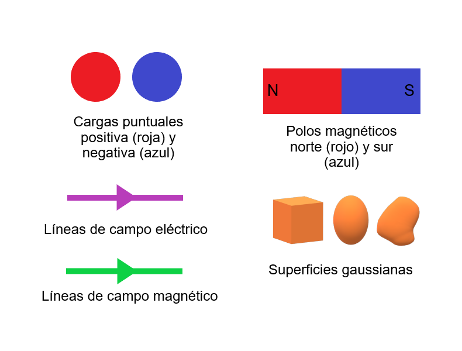

Código de colores
Para entender las visualizaciones, es necesario conocer el significado de los colores en los elementos representados, usa el siguiente código de colores:

Bienvenidx. Te presentamos algunas visualizaciones en realidad aumentada (RA)
acerca de los principales conceptos relacionados con la ley de
Gauss aplicada a campos magnéticos. Lo que aquí llamamos visualizaciones
es la presentación de imágenes tridimensionales de conceptos abstractos.
En la parte superior de este sitio de internet existe
una barra de navegación con fondo de
color gris y cuatro botones azules que puedes usar para dirigirte a
las secciones principales que a continuación te describimos. El botón
Teoría te lleva a una breve descripción de la ley de Gauss para el magnetismo.
El botón Instrucciones te conduce a una explicación de los pasos a
seguir para observar las visualizaciones. El botón Código de colores
te dirige a una imagen de resumen de los elementos representados en
las visualizaciones. Las visualizaciones, con sus descripciones,
están concentradas en la sección Visualizaciones, pero también puedes
acceder a ellas mediante los enlaces con letras
de color azul que encontrarás a lo largo del texto.
Teoría
La ley de Gauss para el magnetismo es una de las cuatro ecuaciones fundamentales del electromagnetismo. Para llegar a ella, abordaremos primero algunos conceptos que la componen.
Se puede definir al flujo del campo magnético \(\varPhi_B\) como la cantidad de líneas de campo magnético \(\overrightarrow{B}\) que atraviesan una superficie \(A\).
Figura l. Representación de las líneas de campo magnético atravesando perpendicularmente a una superficie plana (flujo magnético). Únicamente se muestran las líneas de campo magnético en el plano \( xy \). El vector en color amarillo, \(d\overrightarrow{A}\), es un diferencial del vector de área.
El cálculo de \(\varPhi_B\) se realiza con el producto escalar (producto punto) entre el campo magnético \(\overrightarrow{B}\) y un elemento diferencial de área \(d\overrightarrow{A}\). El resultado se suma, o integra, para todas las contribuciones a través de una superficie \(A\).
\begin{equation} \varPhi_{B} = \int \ \overrightarrow{B} \cdot \ d \overrightarrow{A} \ . \end{equation}
La unidad de medida para \(\varPhi_B\) es el Weber \(Wb\), equivalente a \(\ T \cdot \ m ^ 2 \).
Un dipolo eléctrico está formado por dos cargas iguales, pero de signos opuestos, separadas por cierta distancia; en cambio, un dipolo magnético está formado por dos polos: norte y sur. Las líneas de campo eléctrico y magnético de los dipolos tienen configuraciones muy parecidas, como podemos ver en la siguiente figura y en la visualización respectiva.

Figura ll. Representación del campo eléctrico y magnético generados por un dipolo eléctrico y un imán de barra, respectivamente.
Sin embargo, como podemos observar en la siguiente figura, al dividir ambos dipolos, las líneas de campo ya no son semejantes.

Figura lll. Al partir ambos dipolos por la mitad, se puede observar que las líneas de los campos eléctrico y magnético ya no son semejantes.
En el primer caso, si las cargas eléctricas son separadas por una distancia grande, cada carga se considera como una carga puntual de signo contrario y con líneas de campo eléctrico de forma radial. Mientras que, en el caso magnético, si partimos un imán, no obtendremos polos norte y sur aislados, sino un par de nuevos imanes, cada uno con sus propios polos, como se puede ver en la siguiente imagen y en la visualización correspondiente.

Figura lV. En un imán que se parte por la mitad, las piezas resultantes son nuevos imanes independientes. Si éstos vuelven a ser partidos por la mitad, el resultado será el mismo.
Así, podemos llegar a la conclusión de que las cargas eléctricas constituyen las unidades fundamentales de la electricidad y el dipolo es la unidad fundamental de la estructura magnética, pues hasta donde sabemos, el monopolo magnético no existe.
Puesto que los monopolos magnéticos parecen no existir, la Ley de Gauss para el Magnetismo establece que:
“El flujo neto del campo magnético a través de cualquier superficie cerrada es cero.”
Y este enunciado está expresado en la siguiente ecuación:
\begin{equation} \varPhi_{B} = \oint \ \overrightarrow{B} \cdot \ d \overrightarrow{A} = 0 \ , \end{equation}
donde:
\(\varPhi_{B} \) : flujo de campo magnético
\(\oint \) : integral de superficie cerrada (indica que la función es evaluada en cada punto de la superficie e integrada sobre toda la superficie cerrada.)
\(\overrightarrow{B} \) : campo magnético
\(d\overrightarrow{A} \) : diferencial de área.
La superficie cerrada que se utiliza para realizar esta integral recibe el nombre de superficie gaussiana.
Como vimos, a pesar de que, en el caso del dipolo, las líneas de campo eléctrico y magnético se ven iguales, existe la diferencia de que las fuentes y sumideros del campo magnético parecen no existir, lo cual implica que las líneas del campo magnético forman trayectorias cerradas, este hecho ocasiona a su vez que, sin importar la posición o forma que tenga la superficie gaussiana, siempre habrá la misma cantidad de líneas entrando y saliendo, así que el flujo siempre será igual a cero, como se puede ver en la Figura V y en la visualización al respecto. Aunque en esta figura las superficies gaussianas aparecen como figuras planas, más adelante, en la sección Visualizaciones, podrás observarlas en tres dimensiones y desde diferentes ángulos, con ayuda de la realidad aumentada.
Figura V. Superficies gaussianas alrededor de un imán, representadas por las áreas de color azul claro, que siempre serán atravesadas por el mismo número de líneas que entran y salen, sin importar su forma y posición.
Fuentes:
Halliday, D., Resnick, R. y Krane, K. (1999). Física Volumen 2. México: Compañía Editorial
Continental.
Purcell, E. & Morin, D. (2013). Electricity and magnetism. Estados Unidos de América: Cambridge University Press.
Para poder observar cualquiera de las visualizaciones en realidad aumentada (RA) que aparecen en esta página de internet necesitas contar con:

Sugerencias:
Recuerda que tú puedes imprimir el marcador del tamaño que prefieras, sólo debes tener cuidado de mantenerlo completamente visible durante la visualización. Para obtener el tamaño que te acomode, cambia la distancia del marcador a la cámara.
Puedes desplegar las visualizaciones en el dispositivo que prefieras. Si necesitas mayor libertad de movimiento entre la cámara y el marcador, puedes usar un dispositivo móvil.
Los pasos a seguir son los siguientes:
Para entender las visualizaciones, es necesario conocer el significado de los colores en los elementos representados, usa el siguiente código de colores:
Visualizaciones
Estas visualizaciones forman parte del proyecto EducAR, y su objetivo es facilitar a los estudiantes de Ingeniería en Computación el entendimiento de la Ley de Gauss para el magnetismo utilizando Realidad Aumentada. Todas las visualizaciones funcionan con un mismo marcador.
Dipolo magnético (imán).
Representación de un imán en forma de barra, en el que se puede observar que sus líneas de campo magnético siempre van a formar trayectorias cerradas.
Comparación de dipolos.
Representación de las líneas de fuerza de un dipolo eléctrico y uno magnético, colocados lado a lado, nos muestran la similitud entre los campos eléctrico y magnético, a este nivel.
Imán partido por la mitad.
El resultado de este corte no es un polo norte y un polo sur aislados, sino dos imanes, cada uno con su polo norte y sur. Este resultado se repite hasta el nivel de un solo átomo. Por lo anterior, el monopolo magnético, equivalente a una “carga magnética”, no parece existir. Por otro lado, en el dipolo eléctrico, si ambas cargas son separadas por una distancia considerable, cada carga se considera como una carga puntual de signo contrario y con líneas de campo eléctrico de forma radial.
Imán con superficies gaussianas.
Al colocar superficies cerradas de diferentes formas, en diferentes regiones alrededor del imán, podemos notar que, sin importar su posición, las líneas de campo magnético siempre van a entrar y salir de la superficie, por lo anterior, la ley de Gauss para el magnetismo nos dice que el flujo neto del campo magnético a través de cualquier superficie cerrada es cero. Esto es consecuencia de que el monopolo magnético no existe.
También encontrarás las mismas visualizaciones en unas aplicaciones que desarrollamos y presentamos en el recurso Apps EducAR, con la ventaja de que, con ellas, no necesitas conexión a internet. Puedes acceder a la página haciendo clic en la siguiente imagen.

DIRECCIÓN:
Centro Tecnológico Aragón, segundo piso, Cubículos académicos 2, Cubículo 4, Facultad de Estudios Superiores Aragón, Universidad Nacional Autónoma de México, Avenida Rancho Seco S/N, Col. Impulsora Popular Avícola, Nezahualcóyotl, Estado de México 57130, México.


Créditos
Responsable académica, supervisión del contenido científico y de la construcción de los materiales
Idea original de la plataforma y supervisión de su construcción
Información sobre la ley de Gauss para el magnetismo
Información sobre la ley de Gauss para el magnetismo, construcción de la plataforma, elaboración de los modelos en 3D y las visualizaciones en realidad aumentada e incorporación de las visualizaciones a páginas web